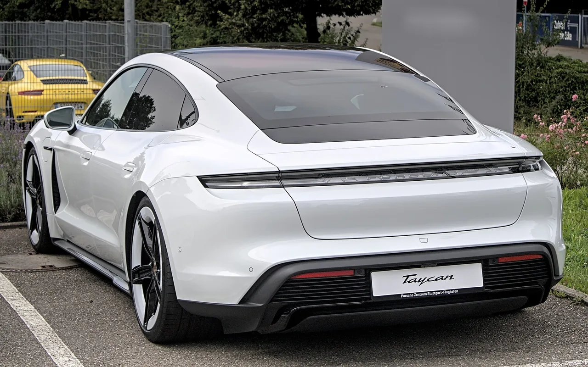

▲ 마칸 터보 일렉트릭. 3개월 만에 구매가의 33.7%가 사라졌다 ⓒ Wikimedia Commons
새 차를 사면 값이 떨어진다는 것은 누구나 압니다. 문제는 얼마나 빨리 떨어지느냐입니다.
이번 사례는 그 속도가 극단적입니다. 3개월, 2,100마일을 탄 전기 마칸이 4만 9,340달러를 잃었습니다.
1. 숫자로 본 손실
경매는 카스앤비즈(Cars & Bids)에서 진행됐고 입찰은 37회 붙었습니다. 유찰이 아니라 정상적으로 시장 가격이 형성된 거래입니다.
| 항목 | 금액 |
|---|---|
| 신차가 (옵션 포함) | $146,340 |
| 경매 낙찰가 | $97,000 |
| 손실액 | -$49,340 |
| 손실률 | -33.7% |
| 보유 기간 | 3개월 / 2,100마일 |
📍 하루에 얼마씩 빠진 셈인가
4만 9,340달러를 약 90일로 나누면 하루 약 548달러입니다. 원화로는 하루 76만 원가량입니다. 원문은 이를 "하루 약 500달러"로 표현했습니다.
주행거리로 나누면 더 극단적입니다. 2,100마일을 달리는 동안 마일당 23달러가 넘게 빠졌습니다.

▲ 630마력에 0→60마일 3.1초를 내는 차다 ⓒ Wikimedia Commons
2. 옵션이 손실을 키웁니다
신차가 14만 6,340달러 가운데 상당 부분이 옵션입니다.
| 항목 | 가격 |
|---|---|
| 부메스터 오디오 | $4,960 |
| 프리미엄 휠 | $2,700 |
| AR 헤드업 디스플레이 | $2,660 |
| 주행보조 패키지 등 | 수천 달러 |
📍 옵션은 중고가에 거의 반영되지 않습니다
신차를 살 때 4,960달러를 낸 오디오는 중고 시세에서 몇백 달러 값어치로 계산되는 경우가 많습니다.
옵션을 많이 넣을수록 구매가는 오르는데 회수액은 그만큼 오르지 않습니다. 감가율이 커 보이는 이유 중 하나입니다.
3. 한 대만의 일이 아닙니다
이 차가 특이한 경우는 아닙니다. 지난 4월에도 1,500마일을 탄 거의 새 차가 12만 1,855달러 신차가 대비 8만 8,500달러에 팔렸습니다.
| 시점 | 주행 | 신차가 | 낙찰가 | 손실 |
|---|---|---|---|---|
| 8월 | 2,100마일 | $146,340 | $97,000 | -$49,340 |
| 4월 | 1,500마일 | $121,855 | $88,500 | -$33,355 |
현지 매체는 "프리미엄 전기차는 출고 직후부터 믿기 어려울 만큼 큰 돈을 잃는 경우가 많다"고 짚었습니다.

▲ 프리미엄 전기차의 감가는 마칸만의 문제가 아니다 ⓒ Wikimedia Commons
4. 왜 이렇게 빨리 빠지나
프리미엄 전기차의 감가가 큰 이유는 몇 가지가 겹칩니다.
✅ 감가를 키우는 요인
· 보조금·인센티브가 신차에만 적용돼 중고 대비 신차가 유리해진다
· 배터리 수명에 대한 중고 구매자의 불안
· 기술 변화가 빨라 구형이 되는 속도가 빠르다
· 옵션 회수율이 낮다
· 리스 만기 물량이 한꺼번에 나오면 공급이 몰린다
5. 앞으로 더 눌릴 가능성
포르쉐는 몇 년 안에 새로운 가솔린 소형 크로스오버를 내놓을 계획입니다. 이 차가 나오면 전기 마칸의 중고 시세는 추가로 눌릴 수 있습니다.
📍 중고로 사는 쪽에서는 기회입니다
같은 사실을 뒤집어 보면, 630마력에 0→60마일 3.1초를 내는 차를 9만 7,000달러에 살 수 있었다는 뜻이기도 합니다.
감가가 큰 차는 첫 주인에게 가혹하고 두 번째 주인에게 유리합니다. 다만 배터리 보증 잔여 기간을 반드시 확인해야 합니다.

▲ 가솔린 소형 크로스오버가 나오면 전기 마칸 시세는 더 눌릴 수 있다 ⓒ Wikimedia Commons
정리
2026년형 포르쉐 마칸 터보 일렉트릭이 경매에서 9만 7,000달러에 낙찰됐습니다. 옵션 포함 신차가는 14만 6,340달러였고, 3개월·2,100마일 만에 4만 9,340달러(33.7%)가 사라졌습니다. 하루 약 500달러꼴입니다.
한 대만의 사례가 아닙니다. 4월에도 1,500마일 차량이 12만 1,855달러 신차가 대비 8만 8,500달러에 팔렸습니다. 옵션 회수율이 낮은 것도 손실을 키웁니다.
보조금 구조, 배터리 수명 불안, 빠른 기술 변화가 겹친 결과입니다. 포르쉐가 가솔린 소형 크로스오버를 준비 중이어서 시세는 더 눌릴 수 있습니다. 반대로 중고 구매자에게는 630마력·0→60마일 3.1초를 싸게 잡을 기회이기도 합니다.